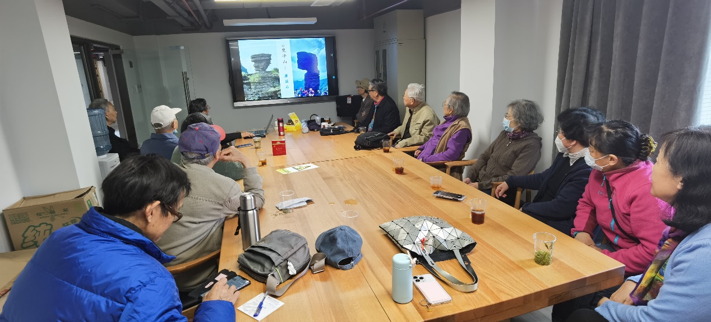
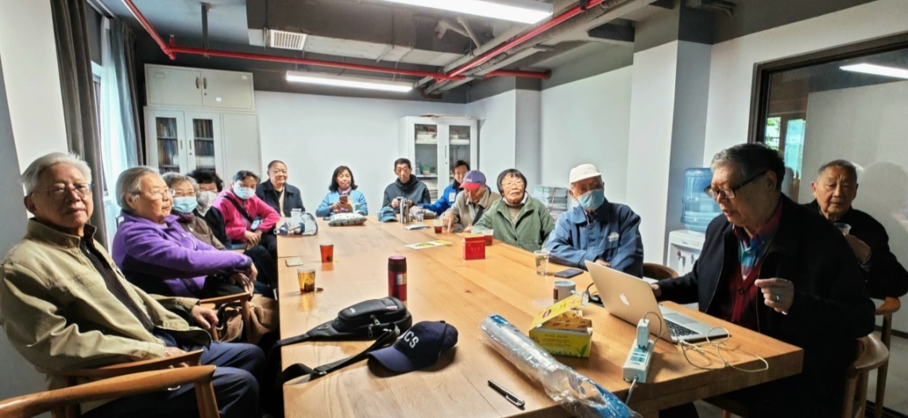
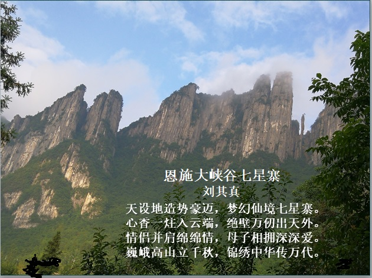
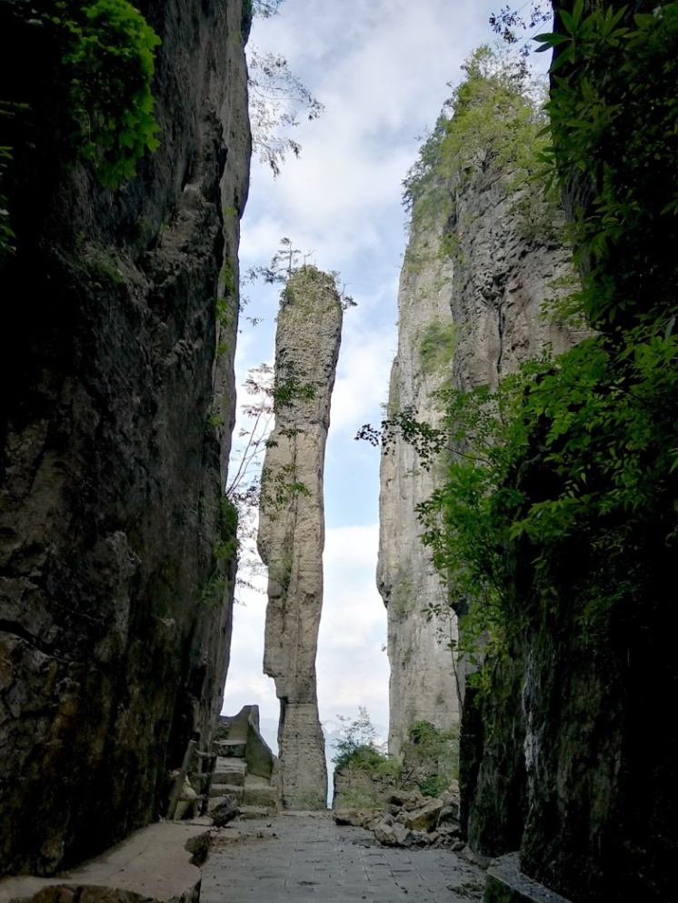
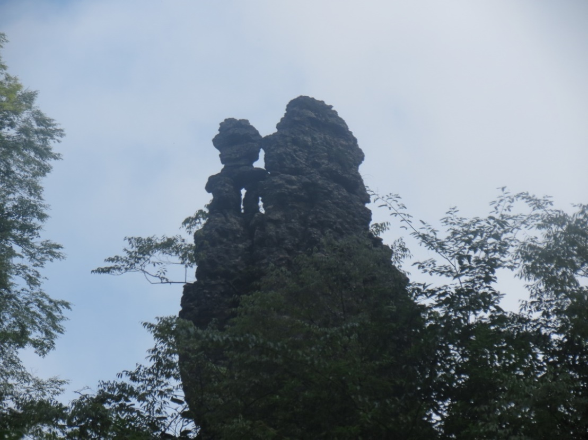
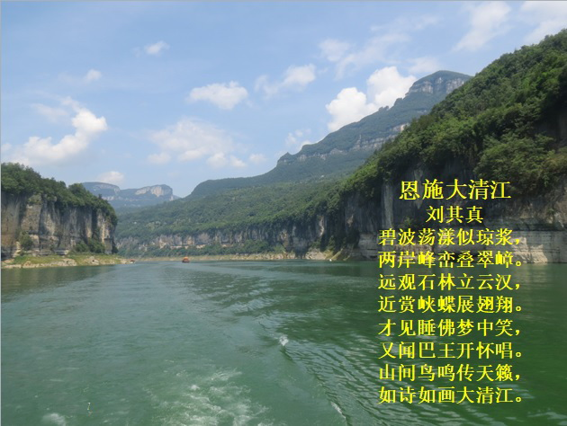
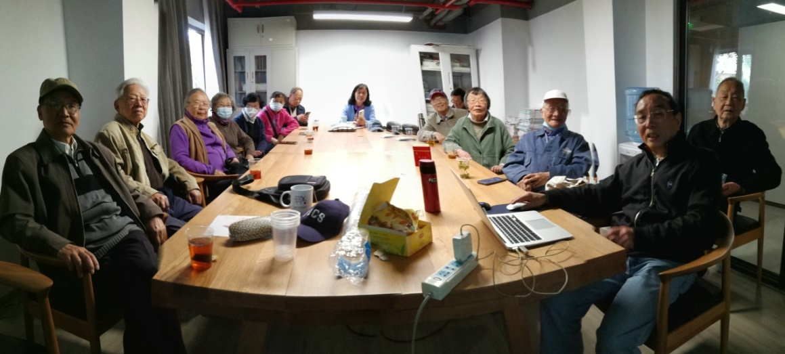
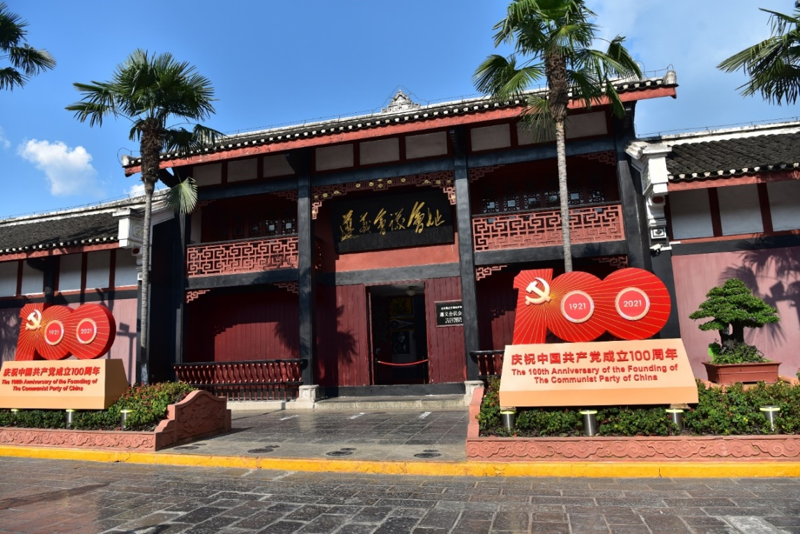
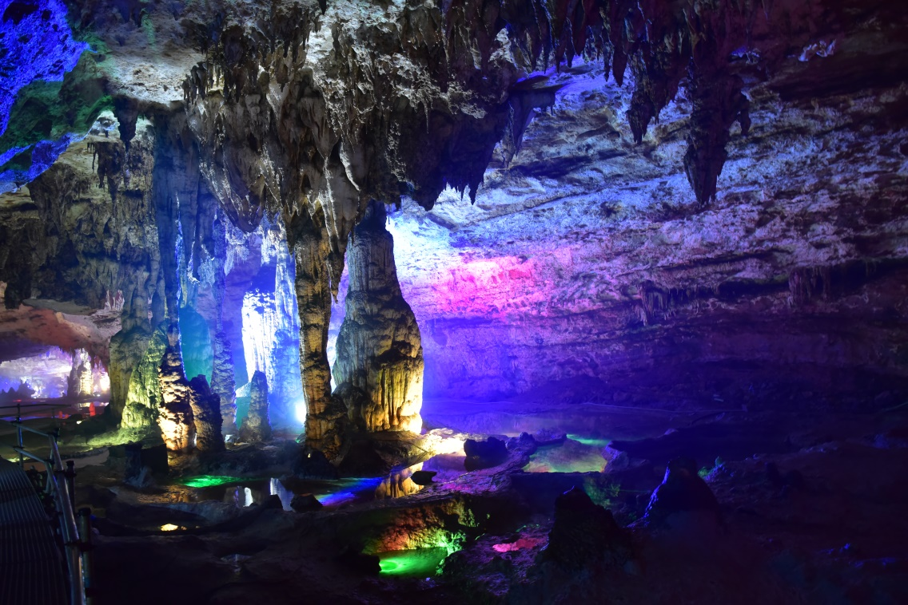

疫情以后，计算机学院退休教职工阔别3年之久的兴趣小组活动重新开始启动。
4月25日是摄影兴趣小组2023年的第一次线下活动时间，活动地点安排在逸夫楼退休教师活动室。除几位老师因事请假外，吴立德、吴霭成、曹邦伟、夏根女、王河清、李应华、孙慰迟、赵志英、吴文翔、王小芳、彭德胜、陈燕云、孔祥秋、陈工、赵子正、刘其真等16位老师兴致盎然地参加了活动，大家热情高涨，早早来到活动室。特别是夏根女老师，耄耋之年，为了参加摄影组活动，一早从崇明赶到复旦，令人感动。

摄影兴趣小组4月25日活动现场 （摄影：李应华）
上午9:30摄影小组活动正式开始。首先请刘其真老师介绍湖北恩施之旅。刘老师在PPT中通过一张张精彩的幻灯片，把大家带入令人神往的旅游场景：雄伟的土司城、神秘的女儿城、壮观的七星寨、神奇的云龙地缝和如诗如画的大清江。

刘其真老师在介绍恩施之旅 （摄影：赵子正）
闻名遐迩的七星寨，大自然的造化令人惊叹。有的“山是一块石，石是一座山”，有的山峰像母子相拥，有的山峰像情侣相伴，有的山体像火炬，有的山体像菩萨在观海，还有的山体像燃烧着的火炬，有的山体像巨大的“”一炷香”…… 栩栩如生，鬼斧神工，真的是天恩地施，不胜枚举。刘老师写了一首诗赞扬七星寨之壮美景色。

七星寨风光 （摄影并赋诗：刘其真）

一炷香 （摄影：刘其真）

母子情深 （摄影：刘其真）
刘老师又介绍了享誉国内外的恩施大清江，江水呈晶莹剔透的碧绿色，碧波荡漾，在白云的映衬下，两岸风光旖旎，如同一幅展开的漫长画卷，有惟妙惟肖的“蝶翅峡”、 千姿百态的“红花淌石林”、大气磅礴的“千瀑峡”、气势雄伟的“彩虹桥”、妙趣天成的“蝴蝶崖”……真是目不暇接，美不胜收。刘老师也专门写了一首诗《恩施大清江》赞叹大清江之旖旎风光。

大清江风光 （摄影并赋诗：刘其真）
大清江“红花淌”石林 （摄影：刘其真）
大清江蝴蝶崖 （摄影：刘其真）
接着由赵子正老师介绍贵州之旅。赵老师也用PPT展示了贵州之美，介绍了贵州黄果树大瀑布、遵义会议纪念馆、双河洞、西江千户苗寨、还有大小七孔、梵净山、清远古镇、青岩古镇、甲秀楼等。

赵子正老师在介绍贵州之旅 （摄影：刘其真）
赵老师首先呈现给大家的是黄果树大瀑布盛景，高77.8米，宽101米的亚洲最大瀑布，以水势浩大著称。赵老师用照片并配上气势磅礴的瀑布视频，使大家有身临其境的“疑是银河落九天”之感。
黄果树大瀑布 （摄影：赵子正）
然后，赵老师介绍了遵义会议纪念馆。1935年1月15日至17日召开的遵义会议在这里举行，这次会议是中国共产党第一次独立自主地运用马克思列宁主义基本原理解决自己的路线、方针和政策方面问题的会议。这次会议，在极端危急的历史关头，挽救了党，挽救了红军，挽救了中国革命，在中国共产党和红军的历史上，是一个生死攸关的转折点。参观这个红色教育基地，思想上深受震撼。

遵义会议纪念馆 （摄影：赵子正）
双河洞是中国最大的溶洞群，水洞、旱洞并存。进入洞中，犹如进入龙宫，千姿百态的钟乳石，在彩色灯光的照射下，显得既壮观美丽又神秘莫测。

双河洞 （摄影：赵子正）
西江千户苗寨，世界无双的苗族村寨、木质吊脚楼依山而建，气势恢弘；清溪峡，碧水秀峰、异石蓝天、像巨幅泼墨山水长卷。

西江千户苗寨 （摄影：赵子正）
这次摄影兴趣小组的活动，既有精致的景色照片，又有引人入胜的典故介绍，还有赞美祖国大好河山的诗篇，将摄影美与文学美融为一体，令在座的老师们得到了一次很好的文化享受。大家鼓掌感谢刘其真、赵子正两位老师的辛苦准备和精彩介绍。
时间不知不觉已到了11:30，姚文遐老师早已为大家准备好了就餐券。大家在食堂里一边吃饭，一边饶有兴味地讨论着旅游与摄影中的趣闻轶事。
摄影兴趣小组计划6月20日安排更多老师展示各自的摄影作品，请大家做好准备，分享祖国大好河山的美景和各地的风土人情，交流摄影心得。热烈欢迎有兴趣的退休教职工光临参加！
计算机学院退休工作组
撰稿人：赵子正、刘其真
2023年4月27日